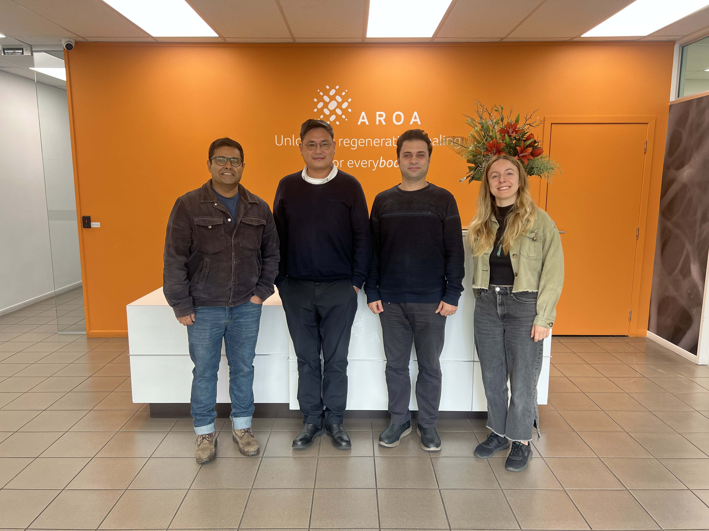
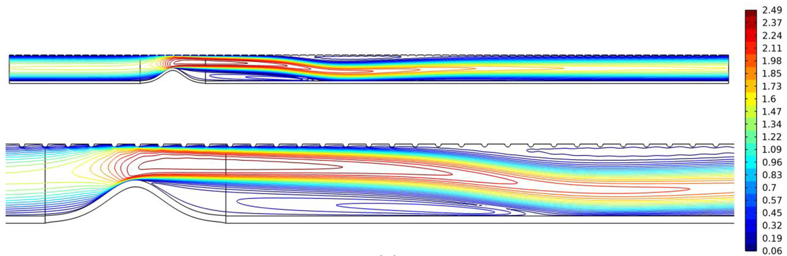
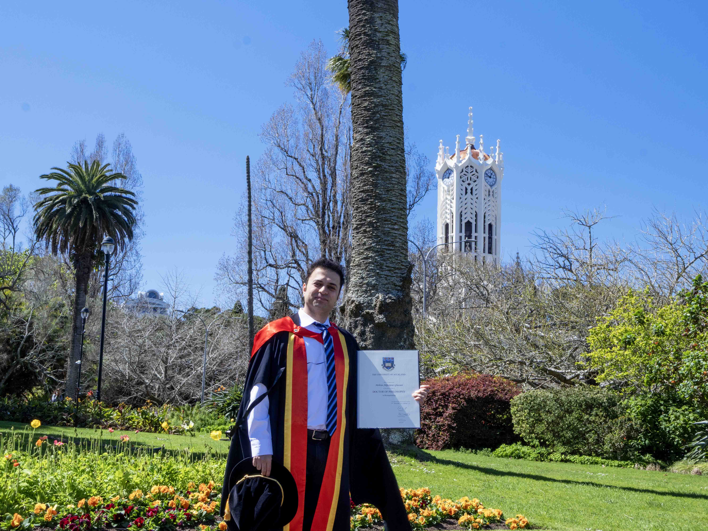

Welcome to my website
MEHRAN


My name is Mehran. I have a PhD in Bioengineering (but this is not the only thing I know!). I have studied Mechanical Engineering for my master's and bachelor's. It has been a fantastic journey for me as I have had many achievements and I have learned a lot. I have enjoyed hands-on courses as well as computational projects. It is always good to have hands-on skills while being a computational person. I have published scientific papers in international journals. I have also participated in conferences.
I have worked as a Mechanical Engineer for almost 5 years. I started my work experience at a petrochemical company, which was a relatively large complex consisting of many units working together to produce raw materials for plastics. I have seen many different mechanical equipment and parts working together to make the final product.
I have also worked as a mechanical designer, where I was a member a team making kitchen appliances.
Most recently, I worked as an Operations Engineer at Aroa in New Zealand.

I have worked as a Mechanical Engineer in different companies. From large petrochemical complex to a family-owned production company. And lately, I have worked as an Operations Engineer at Aroa in New Zealand, where I had broader range of respinsibilities to support smooth and continuous production.
Read more
During and after my academic journey, I have always remained interested in doing research. I enjoy challenges that lead to understanding more about the nature, especially fluids and materials. I want to observe and gain more insight into the things going around in the world. That is why I enjoy seeing new invenstions and I desire to be part of these new discoveries and inventions.
Read more
One of best moments in my life was the day I got my certificate to be a doctor from one the most prestigious universities in the world. Although it seemed to be the end of academic learning, but I will continue learning engineering concepts as I enjoy this. Studying Mechanical Engineering for my bachelor's and master's, I gained enough knowledge to apply and merge it with coding and hands-on skills to make new things or study different phenomena.
Read more